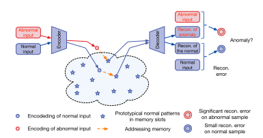
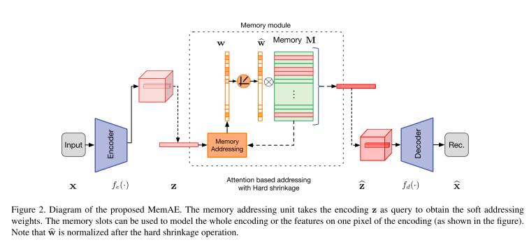
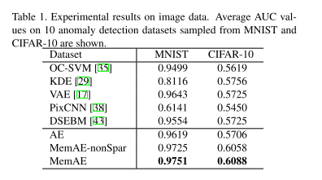
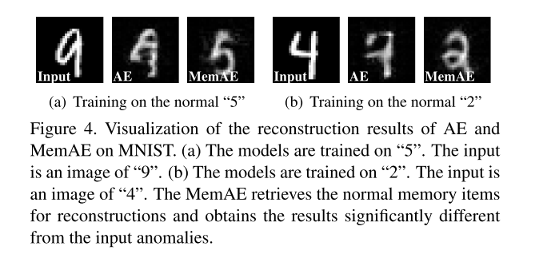
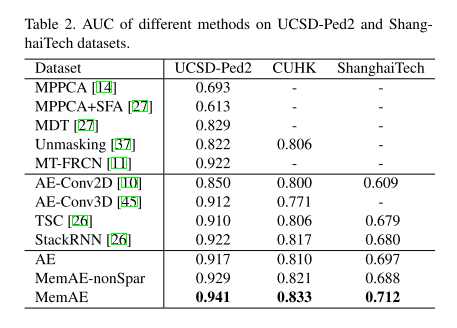
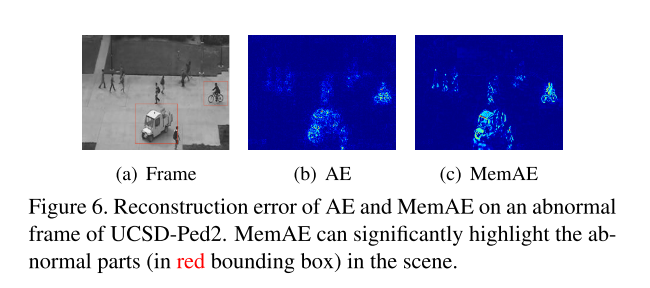

1. どんなもの？
- Autoencoder（差分ベース）の異常検知モデル
- 潜在変数にMemory構造を導入することで正常データ以外も復元できてしまう”汎化”を防ぐ
2. 先行研究と比べてどこがすごい？
- Autoencoderを使った異常検知では，モデルが汎化してしまい異常データまでも復元できてしまう問題があった
- 潜在変数にMemory構造を追加することで，正常データの分布内のデータしか復元できないようにした

3. 技術や手法の"キモ"はどこ？
- Memory構造がキモ
全体の流れ

- Encoderからまず$z$を得る $$ z = f_e(x; \theta_e) $$
- メモリ構造を用いて$\hat{z}$を得る（後述）
- Decoderで$\hat{z}$から復元する
$$ \hat{x} = f_d(\hat{z}; \theta_d) $$
Memory
-
それぞれ変数を定義する
- $M \in \mathbb{R}^{N \times C}$: Memory行列
- $m_i$: $M$の$i$行目Vector
- $N$: メモリ数
- $C$: $\hat{z}$の次元数（論文内では$z$の次元数と一致）
- $w \in \mathbb{R}^{1 \times N} $: Attention Weight Vector
-
Encoderから得られた$z$と$m_i$の距離（内積）を算出して，softmaxすることで$w$を求める $$ w_i = \frac{\exp(d(z, m_i))}{\Sigma^N_{j=1}\exp(d(z, m_j))} $$
$$ d(z, m_i) = \frac{zm_i^T}{|z||m_i|} $$
- $\hat{z}$を求める $$ \hat{z} = wM = \Sigma^N_{i=1}w_im_i $$
Hard Shrinkage for Sparse Addressing
上述のMemory構造でも復元できてしまう異常サンプルは出てくるので，$w$をスパースにすることでより制限する
\[ \hat{w}_i = \begin{cases} w_i & \text{ if } w_i > \lambda \\ 0 & \text{ otherwise } \end{cases} \]
Objective
再構成誤差と$\hat{w}$そスパースにするための誤差の重み付き和 $$ L(\theta_e, \theta_d, M) = \frac{1}{T} \Sigma^T_{t=1}[R(x^t, \hat{x}^t) + \alpha E(\hat{w}^t)] $$
$$ R(x^t, \hat{x}^t) = |x^t - \hat{x}^t| ^2 $$
$$ E(\hat{w}^t) = \Sigma^T_{i=1}-\hat{w}^t\log{\hat{w}^t} $$
論文内では,$\alpha = 0.0002$
4. どうやって有効だと検証した？
画像では，MNIST・Cifar10で実験  
動画では，UCSD-Ped2・CUHK・ShanghaiTechで実験  
5. 議論はあるか？
- 汎化にスポット当てた論文でgood
- MVTec で実験してみたい